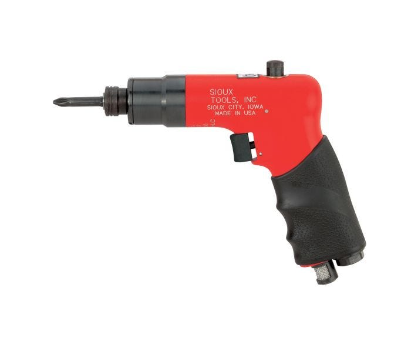
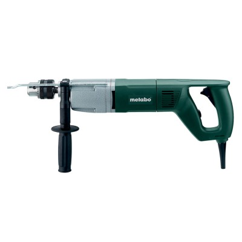

La pistola de tornillo profesional es una herramienta eléctrica de alto rendimiento, fabricada con materiales duraderos como plástico ABS y componentes metálicos resistentes. Su motor potente y par de torsión ajustable permiten un atornillado rápido y preciso, mientras que su diseño ergonómico y liviano reduce la fatiga en uso prolongado. Ideal para profesionales y aficionados, ofrece durabilidad y versatilidad con velocidad ajustable a un precio de 850$
850$

La pistola de tornillo eléctrica es una herramienta potente y eficiente, ideal para atornillar con precisión en diversos materiales. Su diseño ergonómico y liviano reduce la fatiga, mientras que el motor de alta calidad y el par de torsión ajustable aseguran un rendimiento rápido y preciso. Fabricada con materiales duraderos, es perfecta tanto para trabajos profesionales como domésticos, ofreciendo una excelente relación calidad-precio, con precios desde 500$.
500$

Este taladro grande de alta calidad, fabricado con acero de aleación resistente, ofrece una gran durabilidad y potencia para perforar materiales duros como metal, concreto y madera. Su motor eficiente y el diseño ergonómico con sistema antivibración aseguran un trabajo cómodo y seguro. Con control de velocidad variable y protección contra sobrecalentamiento, es ideal para profesionales en carpintería, construcción y metalurgia a un precio de 1,200$